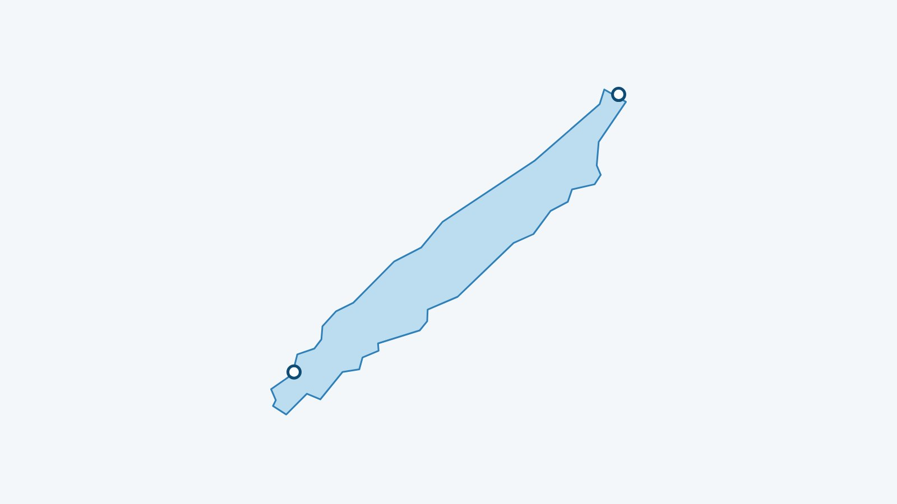

En bref
Mon Lac affiche la température de l’eau du lac de Joux à 70 cm sous la surface, mise à jour toutes les trois heures à partir du modèle Alplakes de l’Eawag. Le modèle est tridimensionnel : la valeur est lue devant chacune des 2 plages suivies, et peut donc différer de l’une à l’autre.
D’où vient la température du lac de Joux ?
Les chiffres viennent d’Alplakes, la plateforme de l’Eawag (l’institut de recherche sur l’eau du domaine des EPF). Elle combine des modèles numériques des lacs et des données satellitaires pour calculer la température de l’eau à différentes profondeurs. Les données sont publiées sous licence CC BY 4.0, et Mon Lac les relit toutes les trois heures.
Pour le lac de Joux, Alplakes fait tourner un modèle en trois dimensions. Mon Lac y lit la valeur à 70 cm de profondeur, au point du modèle situé devant chaque plage. L’Eawag indique, pour les grands lacs, une erreur d’environ 1 °C en surface.
La température est-elle la même sur toutes les plages ?
Non. Le vent déplace l’eau de surface, et les baies peu profondes se réchauffent ou se refroidissent plus vite que le large : le même jour, deux plages peuvent afficher des valeurs différentes. L’écart du moment est calculé plus bas. Le mécanisme est expliqué, exemples mesurés à l’appui, dans notre article sur la température du Léman.
Pourquoi 70 cm sous la surface ?
Parce que c’est à peu près l’eau dans laquelle on nage. La toute première pellicule de surface change très vite avec le soleil et l’air ; un peu plus bas, la valeur est plus stable et plus proche de ce que l’on ressent en entrant.
Les 2 plages suivies
Chaque plage a sa page, avec l’eau, le vent et un verdict pour la baignade et le paddle.
Où voir la température du lac de Joux en direct ?
Dans l’app Mon Lac, gratuite et sans compte. La liste de toutes les plages couvre aussi les autres lacs suisses.
L’eau du lac de Joux en ce moment
La température de chaque plage est dans l’app Mon Lac, mise à jour toutes les trois heures.